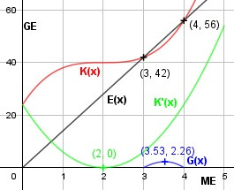

Aufgabe 94 Für eine ganzrationale Kostenfunktion 3. Grades existiert die folgende Wertetabelle. x in ME 0 1 2 3 K(x) in GE 24 38 40 42 a) Bei welcher Menge hat die Grenzkostenfunktion ein Minimum? b) In welchem Bereich liegt die Gewinnzone, wenn E(x) = 14x? c) Wie hoch ist der maximale Gewinn? a) K(x) = ax3 + bx2 + cx + d K(0) = 24 --> d = 24 K(1) = 38 = a *12 + b * 12 + c * 1 * 24 |-24 a + b + c = 14 (1) K(2) = 40 = a * 23 + b * 22 + c * 2 + 24 |-24 8a + 4b + 2c = 16 (2) K(3) = 42 = a * 33 + b * 32 + c * 3 + 24 |-24 27a + 9b +3c = 18 (3) (2) + (1) * (-2) 8a + 4b + 2c = 16 -2a - 2b - 2c = -28 -------------------- 6a + 2b = -12 (4) (3) + (1) * (-3) 27a + 9b + 3c = 18 -3a - 3b - 3c = -42 -------------------- 24a + 6b = -24 (5) (5) + (4) * (-3) 24a + 6b = -24 -18a - 6b = 36 ------------------- 6a = 12 | :6 a = 2 a in (4) eingesetzt: 6 * 2 + 2b = -12 |-12 2a = - 24 |2 b = -12 a und b in (1) eingesetzt: 2 - 12 + c = 14 |+10 c = 24 K(x) = 2x3 - 12x2 + 24x + 24 K'(x) = 6x2 - 24x + 24 K''(x) = 12x - 24 K'''(x) = 12 > 0 --> Tiefpunkt 12x - 24 = 0| :12 x = 2 K'(2) = 6 * 22 - 24 * 2 + 24 = 0 Die Grenzkostenfunktion K'(x) hat an der Stelle x = 2 ein Minimum. b) G(x) = 14x - (2x3 - 12x2 + 24x + 24) G(x) = -2x3 + 12x2 - 10x - 24 - 2x3 + 12x2 - 10x - 24 = 0 Durch Probieren gefunden x11 = 3 Hornerschema: -2 12 -10 -24 x1 = 3 -6 18 24 ---------------------------- -2 6 8 0 Polynomdivision: -2x3 + 12x2 - 10x - 24 : (x - 3) = -2x2+6x+8 -(-2x3 + 6x2) --------------- 6x2 - 10x - 24 -(6x2 - 18x) ------------- 8x - 24 -(8x - 24) ----------- 0 - 2x2 + 6x + 8 = 0 | : (-2) x2 - 3x - 4 = 0 p, q - Formel: p = -3, q = -4 x2,3 = x2,3 = 1,5 ± x2,3 = 1,5 ± x2,3 = 1,5 ± 2,5 x2 = 4 ME = Gewinngrenze, x1 = 3 ME = Gewinnschwelle x3 = -1 keine Lösung c) G'(x) = - 6x2 + 24x - 10 G''(x) = - 12x + 24 - 6x2 + 24x - 10 = 0 A, B, C - Formel: A = -6, B = 24, C = -10 x1,2 = x1,2 = x1,2 = -24 ± 18,3 x1,2 = ------------ -12 x1 = 3,53 ME G(3,53) = -2 * 3,533 + 12 * 3,532 - - 10 * 3,53 - 24 = 2,26 GE x2 = 0,475 keine Lösung, außerhalb der Gewinnzone K''(3,53) = - 12 * 3,53 - 10 < 0 --> Hochpunkt (3,53|2,26) Der maximale Gewinn beträgt 2,26 GE.
